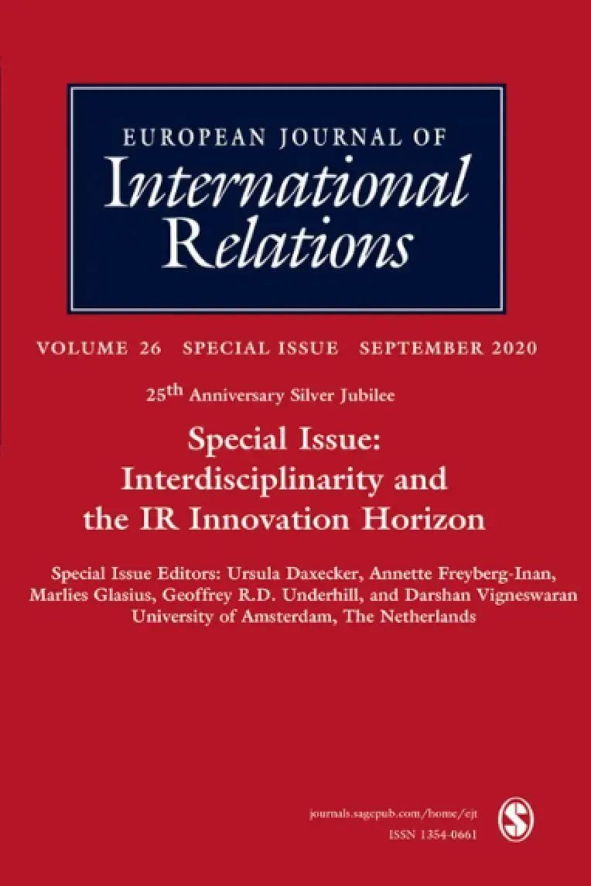

收录于合集 #新刊速递 123个


期刊简介

European Journal of International Relations,《欧洲国际关系杂志》（EJIR）是欧洲政治研究联盟国际关系常设小组（the Standing Group on International Relations of the European Consortium for Political Research, SGIR）的同行评审旗舰期刊, 由SGIR和欧洲国际研究协会组成的联合委员会共同管理。根据Journal Citation Reports显示，2019年该期刊的影响因子为3.474。
本期编委
【编译】 陈勇、王泽尘、谢菁、赖永祯
【审校】 施榕
【排版】 苏语涵

本期目录
1、目标转移：维和对战后暴力的影响 Shifting targets: the effect of peacekeeping on postwar violence
2、反叛武装的“事实政权”及其治理
Rebel governance in de facto states
3、引入摩根索的道德准则：多元性、不可通约性与国际关系中从分裂到对话的转变
Bringing Morgenthau’s ethics in: pluralism, incommensurability and the turn from fragmentation to dialogue in IR
4、世界政治中的忠诚
Loyalty in world politics
5、对领导力的重新思考：理解美国和中国在《巴黎协定》谈判中的角色
Rethinking leadership: understanding the roles of the US and China in the negotiation of the Paris Agreement
6、通往全球国际关系学的现实主义道路
Realist avenues to global International Relations
7、重审扩张叙事：国际社会以及荷兰东印度公司作为商业帝国的角色
Revisiting the expansion thesis: international society and the role of the Dutch East India company as a merchant empire
8、“公司政权”与全球性国际体系的形成
Company-states and the creation of the global international system
01
目标转移：维和对战后暴力的影响
【题目】 Shifting targets: the effect of
peacekeeping on postwar violence
【作者】 Corinne Bara，瑞典乌普萨拉大学战争与和平研究助理教授。主要研究方向为内战期间和之后武装行为者的暴力行为和战略。
【摘要】 现有研究表明，内战后的和平在维和人员在场的情况下更为稳定。然而，在许多战后的情况下，暴力依然存在，尽管战后暴力往往具有战略性，并与前一次战争的断层线密切相关，但我们对维和人员对这种暴力的影响知之甚少。此外，我们所了解的，主要是前战斗人员，而本研究表明，战后暴力中的大多数死亡是由其他武装行为者造成的。这对维和人员来说是一个挑战，由于授权或能力方面的原因，他们通常关注交战的各方。作者认为，维和人员对战后暴力行为的影响取决于他们在多大程度上填补了战后的公共安全空白，因为特派团任务范围之外的暴力行为的责任在于经常失灵的国家安全机构。为了验证这一点，作者使用了一种新的空间法来生成数据，这些数据捕捉了战后不同背景下暴力的多种表现形式。作者发现，只有联合国警察——他们对公共安全有更广泛的影响——才能在总体上缓解战后暴力。联合国部队对于前战斗人员针对平民的暴力有一定影响，但在对于其他武装行为者的暴力行为方面并没有发现这样的影响。调查结果突出了在联合国警察的工作方式和能力受到质疑之际维持和平警察的重要性，也强调了在更广泛地分析国际干预的影响时，对众多暴力行为体作出解释的重要性。
Existing research shows that peace after civil wars is more stable with peacekeepers present. Yet, violence persists in many postwar contexts, and although postwar violence is often strategic and closely linked to the faultlines of the preceding war, we know little about the impact of peacekeepers on such violence. What we know, moreover, focuses on the former combatants, while this study shows that the majority of deaths in postwar violence are inflicted by other armed actors. This is a challenge for peacekeepers who—for mandate or capacity reasons—usually focus on the warring parties. I argue that the impact of peacekeepers on postwar violence hinges on the extent to which they fill a public security gap after war, since responsibility for violence not covered by a mission’s mandate lies with the often dysfunctional security agencies of the state. To test this I use a novel spatial approach to generate data that captures the manifold manifestations of violence across different postwar contexts. I find that only UN police—with their broader effect on public security—mitigate postwar violence generally. UN troops have some impact on civilian targeting by former combatants but no such effect could be identified for violence by other armed actors. The findings highlight the importance of peacekeeping police at a time when the modus operandi and capacity of UN police have been questioned, but also the importance of accounting for a multitude of violent actors when analysing the impact of international interventions more generally.
【编译】 谢菁
【校对】 施榕
02
反叛武装的“事实政权”及其治理
【题目】 Rebel governance in de facto
states
【作者】 Adrian Florea, 英国格拉斯哥大学社会与政治学学院高级讲师，研究兴趣为内战与族群冲突、分离主义与叛乱武装统治等；参见：https://www.gla.ac.uk/schools/social
political/staff/adrianflorea/#biography,researchinterests。
【摘要】 所谓“事实存在的政权”（de facto states，下称“事实政权”，例如索马里境内的“索马里兰”）指的是在一国之内的具有国家政权特征，但缺乏国际法地位的（主权国统治所不及的）“内飞地”。这些政权往往通过广泛的治理实践来获取其内外正当性：例如成立军队与警察等武装力量；建立行政、立法与司法机关；以及建立医院、学校、银行或社会保障体系等基础设施。然而，尽管通过以上一套复杂的治理架构建设能确保“事实政权”获得一些实在利益，这些事实政权在其所建立的具体制度上展现出巨大的差异：一些政权仅是成立较为简陋的治理结构（例如乌克兰境内的“卢甘斯克人民共和国”），而另一些则试图建立成熟的治理体系（例如摩尔多瓦境内的“德涅斯特河沿岸共和国”）。何种情况解释了这些“飞地”在治理实践上的差异呢？本文通过使用自1945-2016年所有事实政权的内部制度安排等原始数据，对促使分离主义者采用不同治理模式的关键要素提供了实证检验。通过数据分析发现，这些“事实政权”在能获取到易被掠夺的矿产资源时，则其投入治理实践的可能性下降；而当：（1）获得外部军事援助或境内有维和部队存在、（2）获取相对不动资产、（3）“采用‘马克思主义’意识形态”、（4）对领土进行长期控制，则政权投入治理实践的可能性则上升。这些发现有助于更好理解作为“非国家行为体”的反叛武装得以作为“事实政权”以“取代”主权国家，以及成功使其统治得以制度化的条件。
De facto states, such as Somaliland (Somalia), are unrecognized separatist enclaves that display characteristics of statehood but lack an international legal status. To acquire domestic and external legitimacy, these actors engage in a wide range of governance practices: they set up military and police forces; executive, legislative, and judicial branches; hospitals; schools; banks; or social security networks. In spite of the obvious gains that can be accrued through the establishment of a complex governance architecture, de facto states exhibit great variation in the range of state-like institutions that they build: some, like Luhansk People’s Republic (Ukraine), put together a rudimentary governance apparatus, while others, like Transnistria (Moldova), manage to construct a complex system of rule. What explains the variation in governance practices across these separatist enclaves? Using original data on governance institutions across all de facto states (1945–2016), this study offers an empirical examination of the key factors that shape separatists’ incentives to supply governance. The findings reveal that de facto state separatists are less likely to provide governance when they have access to lootable mineral resources but are more likely to do so when they receive external military support, when peacekeepers are present, when they have access to relatively immobile assets, when they adopt a Marxist ideology, and when they control the territory for a long time. The findings help us better understand the conditions under which armed non-state actors supplant sovereign states as de facto authorities and successfully institutionalize their rule.
【编译】 赖永祯
【校对】 施榕
03
引入摩根索的道德准则：多元性、不可通约性与国际关系中从分裂到对话的转变
【题目】 Bringing Morgenthau’s ethics
in: pluralism, incommensurability and the turn from fragmentation to dialogue in IR
【作者】 Haro L. Karkour，伯明翰大学政治学与国际研究系讲师；Dominik Giese, 汉堡大学博士生。
【摘要】 为什么国际关系的多元主义留下了这么多不可通约的阵营？国际关系如何可以被界定为一门学科，在这里这些阵营可以在不掩盖理论多元化的情况下找到对话的共同点？为了回答第一个问题，本文认为，摩根索对国际关系学作为社会科学的批判，可以解释国际关系学多元主义中不可通约、不能对话的阵营的激增。通过超越摩根索在社会科学批判中所强调的政治困境，如今的理论是意识形态的阵营，赋予道德一种意识形态的功能，使这些阵营的权威正当化，从而为特定的手段/目的等级制服务。这导致了无法辩论的实证因果分析的泛滥，因为它们依赖于政治利益，这些政治利益被理论在意识形态上所证明并提供了内部效度。为了避免这一问题，本文回答了第二个问题，提出通过摩根索的“权利界定利益”的概念来划定这一学科。本文认为，在这一概念的基础上划分学科，通过开放有关手段和目的的规范性辩论，为国际关系中的对话打开了空间，从而在促进理论多元化的同时，成为防止意识形态阵营泛滥的一道屏障。
Why did IR pluralism end with so many incommensurable camps? (How) can IR be demarcated as a discipline where these camps can find common ground for dialogue without glossing over theoretical pluralism? To answer the first question, the paper argues that Morgenthau’s critique of IR as social science can explain the proliferation of camps in IR pluralism that are incommensurable and cannot engage in dialogue. By transcending the dilemma of politics as highlighted in Morgenthau’s critique of social science, theories today are ideological camps that bestow on morality an ideological function that justifies their powers-that-be that serve particular means/ends hierarchies. This leads to the proliferation of empirical causal analyses that cannot be debated, since they rely on political interests that theory ideologically justifies and offers internal validation. To avoid this problem, the paper answers the second question by proposing to demarcate the discipline through Morgenthau’s concept of ‘interest defined as power’. It argues that demarcating the discipline on the basis of this concept opens room for engaging in dialogue in IR through leaving open the normative debate of means and ends, and thus acts as a bulwark against the proliferation of ideological camps, while promoting theoretical pluralism.
【编译】 谢菁
【校对】 施榕
04
世界政治中的忠诚
【题目】 Loyalty in world politics
【作者】 Lauge N Skovgaard Poulsen，伦敦大学学院（University College London）政治学系国际政治经济学方向副教授，研究生项目主任。主要研究领域为经济外交，尤其是对外投资、争端解决和国际经济法律等方面。作者信息参考：https://www.ucl.ac.uk/global-
governance/about/people/lauge-poulsen。
【摘要】 在困难时期，忠诚是维系关系的粘合剂。然而，令人惊讶的是，国际关系学科中几乎没有文献聚焦于忠诚的作用。这一概念经常被引用——尤其是“忠诚盟友”的说法——但通常只是顺便提及，而且往往是基于对忠诚的性质和影响的未必正确的假设。在借鉴道德哲学中有关忠诚伦理的文献的基础上，本文提出忠诚是一种受情感依恋驱动的，具有持续性的偏袒行为。反过来，这种依恋主要是由共享的社会认同感驱动的，同时也是忠诚的主体和客体之间的互动造就的。作者在文中将展示这一对忠诚的理解如何不同于大多数政治学家对这一概念的使用，并说明为什么忠诚对研究世界政治很重要。
Loyalty is part of the glue that holds relationships together in times of difficulty. Surprisingly, however, hardly any literature exists on the role of loyalty in International Relations. The concept is routinely invoked —not least the notion of the ‘loyal ally’—but typically only in passing and often based on questionable assumptions about the nature and effect of loyalty. Building on literature in moral philosophy on the ethics of loyalty, this paper presents loyalty as persistently partial behaviour driven by affective attachments. Such attachments are, in turn, driven mainly by a sense of shared social identity but also the interaction between subjects and objects of loyalty. I show how this understanding of loyalty differs from how most political scientists use the concept and illustrate why it matters for the study of world politics.
【编译】 陈勇
【审核】 施榕
05
对领导力的重新思考：理解美国和中国在《巴黎协定》谈判中的角色
【题目】 Rethinking leadership: understan
-ding the roles of the US and China in the negotiation of the Paris Agreement
【作者】 Robyn Eckersley，墨尔本大学社会
与政治科学学院教授兼政治学系主任。
【摘要】 在国际关系学科中，有关领导力的研究遵循着两种不同的路径：关于霸权主义和关于国际谈判中不同类型的领导力。然而，这两种路径之间几乎没有重叠，更没有对领导力的不同特征，以及解释是什么将领导者和追随者在集体追求中联系在一起达成共识。本文批判性地结合了两种路径的研究，并提供了对领导力的重新定义，即一种合法的、不对等的影响形式，与支配相区别，在促进集体于特定社群中实现共同目标方面发挥重要的社会功能。这一定义可以在多边谈判被操作化，并用于调查和阐明中美在《巴黎协定》的缓解条款谈判中所扮演的角色。报告显示，美国在奥巴马政府的领导下，在推动各方达成协议方面发挥了持续性的，但主要是交易型的领导作用，而中国则主要扮演防御型的合作伙伴，但在最后阶段的重要时刻却与美国共同发挥了领导作用。分析显示，尽管国际社会对中国的期望越来越高，但与美国不同的是，中国并不认为自己的角色是领导世界。
The study of leadership in International Relations has followed two different paths: work on hegemony and work on different leadership types in international negotiations. Yet there is little overlap between them and no agreement on the distinctive features of leadership and what connects leaders and followers in a collective pursuit. This article critically engages with both literatures and offers a reconceptualization of leadership as a form of legitimated asymmetrical influence that is marked off from domination and performs an important social function in facilitating collective agency towards common goals in a given community. This account is then operationalised in relation to multilateral negotiations to examine and clarify the roles of the United States and China in the negotiation of the mitigation provisions of the Paris Agreement. It is shown that the US under the Obama administration performed a sustained but largely transactional leadership role in bringing the parties to an agreement while China’s role was predominantly that of a defensive cooperator but with significant moments of shared leadership with the US towards the endgame. The analysis shows that, despite growing international expectations, China, unlike the United States, did not see its role as leading the world.
【编译】 王泽尘
【校对】 施榕
06
通往全球国际关系 学 的
现实主义道路
【题目】 Realist avenues to global Interna-tional Relations
【作者】 Michiel Foulon, 苏黎世联邦理工学院安全研究中心(CSS)中美关系和美国对华大战略高级研究员。Gustav Meibauer, 伦敦政治经济学院国际关系研究员。
【摘要】 长久以来，现实主义一直被全球国际关系学所批判，但现实主义却有助于后者，可以完善对国际关系的解释。全球国际关系学批判现实主义自认为是的普遍性、排斥非西方的观点并且误读很多外交政策、大战略以及国际事务。然而，回顾全球国际关系学反对现实主义的案例，可以发现现实主义如何对全球国际关系学进行补充。现实主义可以通过其最新变体——新古典现实主义(NCR)对国际关系作出更全面的理解。这种最新的现实主义允许对国家行为的驱动因素进行处境化和历史化，它可以涉及并已经参与进了全球问题和案例、全球思想和概念、以及全球观点和学术中。对96位学者发表的149篇NCR出版物进行定位后发现，知识的产生正慢慢地从北美转移到欧洲，并在较小程度上转移到了亚洲和非洲。有创造性的研究设计和学术性的合作可以将现实主义置于与全球国际关系学之间富有成效的对话中。这对现实主义、全球国际关系学、更广泛的学科发展的理论建构和包容性知识生产具有启示意义。只有当我们发现现实主义者发展的新途径时，他们才能为更全球化的国际关系学做出贡献。反过来，当从事全球国际关系学研究的学者参与现实主义研究时，他们才能更好地解决他们所挑战的西方与非西方的二分法。
Realism has long been criticized by global IR, but the former can contribute to the latter and thereby improve explanations of international relations. Global IR criticizes that realism supposedly applies universally, sidelines non-Western perspectives, and misunderstands much of foreign policy, grand strategy, and international affairs. Reviewing global IR’s case against realism, however, exposes avenues for realism to complement global IR. Realism can contribute to a more global understanding of international relations through its most recent variant: neoclassical realism (NCR). This newest realism allows for contextualization and historicization of drivers of state behavior. It can embrace and has already been engaging global questions and cases; global thought and concepts; and global perspectives and scholarship. Mapping 149 NCR publications produced by 96 scholars reveals a slow shift in knowledge production away from North America toward Europe and to a lesser extent Asia and Africa. Creative research designs and scholarly collaboration can put realism in fruitful conversation with global IR. This has implications for theory building and inclusive knowledge production in realism, global IR, and the wider discipline. Only when we discover new avenues for realists to travel can they contribute to a more global IR. In turn, when global IR scholars engage realism, they may be better able to address the Western versus non-Western dichotomies they challenge.
【编译】 王泽尘
【校对】 施榕
07
重审扩张叙事：国际社会以及荷兰东印度公司作为商业帝国的角色
【题目】 Revisiting the expansion thesis:
international society and the role of the Dutch East India company as a merchant empires
【作者】 Kevin Blachford，爱沙尼亚波罗的海防务学院讲师。作者信息请参考：https://www.etis.ee/CV/Kevin_Blachford/eng?lang=ENG。
【摘要】 本文通过关注商业帝国—如荷兰东印度公司(VOC)在塑造欧洲与非西方世界的互动中所扮演的角色—开辟了新的领域。通过观察东印度公司及其在亚洲的扩张如何影响了欧洲内部的发展，本文对英国学派以国家为中心的，关于国际社会扩张的叙事提出了批评。作为一个非国家行为体，东印度公司发展了贸易和权力的网络，这些网络与荷兰对抗伊比利亚霸权的斗争相互交织。本文认为，国际法、主权平等和欧洲国际社会的发展都需要被理解为是在这些殖民碰撞中形成的。将东印度公司视为一个商业帝国是一种更注重细节的扩张叙事，它承认国家、帝国和早期现代公司以一种共同演化的方式发展。这种批判性路径要求学者承认国际社会是一种由不同文化的争论所形成的持续进程。
This paper breaks new ground by looking at the role played by merchant empires, such as the Dutch East India Company (VOC), in shaping European interactions with the non-Western world. It offers a critique of the English School’s state-centric narrative of the expansion of international society by looking to how the VOC and its expansion in Asia influenced developments within Europe. As a non-state actor, the VOC developed networks of trade and power, which were intertwined with the Dutch struggle against Iberian hegemony. As this paper shows, the development of international law, sovereign equality and European international society needs to be understood as being constituted through these colonial encounters. Looking to the VOC as a merchant empire presents a more nuanced approach to the expansion narrative that recognises that states, empires and early modern companies developed in a co-evolutionary manner. This critical approach calls for the recognition of international society as an ongoing process formed by the contestation of hybrid cultures.
【编译】 陈勇
【校对】 施榕
08
“公司政权”与全球性
国际体系的形成
【题目】 Company-states and the creation
of the global international system
【作者】 Andrew Philips, 澳大利亚昆士兰大学政治学副教授，研究方向为国际关系；参见：https://polsis.uq.edu.au/profile/1348/
andrew-phillips。J.C. Sharman, 剑桥大学政治学教授，研究方向为早期现代世界的国际体系与国际腐败问题。参见：https://www.po
lis.cam.ac.uk/Staff_and_Students/professor-jason-sharman。
【摘要】 本文考察了近代早期“公司政权”
（Company- states）在推动封闭的区域国际体系迈向第一个“真正的”全球性国际体系中具有重要但被忽视的性质与意义。历史上，像荷兰与英国东印度公司等行为体是欧洲在亚洲、非洲与美洲的第一轮扩张中的急先锋。从概念上讲，这些“公司政权”拓宽了对国际行为体的理解。当欧洲境内的政治过程走向主权国家形态的制度趋同时，欧洲对外扩张的需求却引起了多样化的制度竞争。“公司政权”能够在主权国家处于弱势的时代环境下脱颖而出，其原因在于它们在处理洲际贸易与统治的交易成本与委托- 代理问题时，具有相对较优的效率。相反，在日后面对日益激烈的全球地缘政治竞争时，“公司政权”走向衰落并被欧洲建立正式帝国的新计划所取代。通过避免“欧洲中心论”与“国家中心论”，并凸显早期国际体系的多样性与混合特征，本文推动了国际体系形成这一议题的研究。
We investigate the nature and significance of the vital but neglected “company-states” in helping to facilitate the move from contained regional international systems to the first genuinely global international system. Historically, actors like the Dutch and English East India Companies were crucial in spearheading the first wave of European expansion in Asia, Africa, and the Americas. Conceptually, company-states broaden our understanding of international actors. At a time when intra-European politics favored gradual institutional convergence on the sovereign state, the demands of extra- European expansion meanwhile gave rise to diverse competing institutions. Company-states succeeded in an era of weak sovereign states because of their relative efficiency in managing the transaction costs and principal-agent challenges of intercontinental trade and rule. Conversely, company-states later declined as they succumbed to the effects of sharpening worldwide geopolitical competition, and were displaced by increasingly powerful new European empire-building projects. This argument advances earlier work on the creation of the international system by eschewing Euro-centrism and state- centrism, and foregrounding diversity and hybridization.
注：本文中的“公司政权”指欧洲国家在早期殖民扩张时，于殖民地建立的以特许贸易公司为基础，除具有在垄断本国与殖民地贸易之外，拥有对殖民地行政权、军事权与司法权的殖民地制度安排；由于特许贸易公司在其辖域内殖民地的统治拥有相对的自治地位（例如自主管辖军队），故作者称之为“政权”。参见：https://asianreviewofbooks.com/content/outsourcing- empire-how-company-%C2%
ADstates-made-the-modern-world-by-andrew-phillips-and-jc-sharman/。
【编译】 赖永祯
【校对】 施榕
添加 “国小政”微信
获取最新资讯


国政学人
支持学术公益与知识传播
微信扫一扫赞赏作者 __赞赏
已喜欢，对作者说句悄悄话
取消 __
发送给作者
发送
最多40字，当前共字
上一页 1/3 下一页
长按二维码向我转账
支持学术公益与知识传播
受苹果公司新规定影响，微信 iOS 版的赞赏功能被关闭，可通过二维码转账支持公众号。